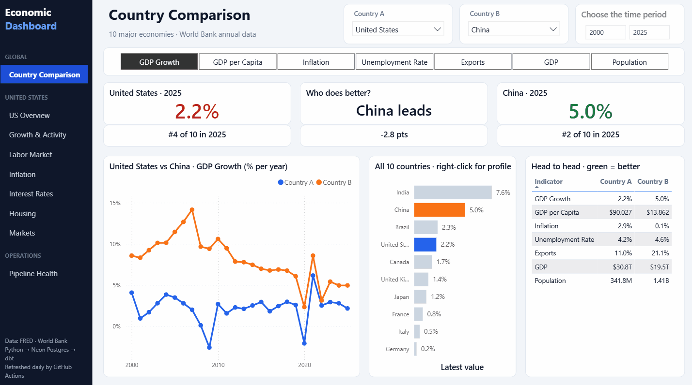

Personal project, live
Economic Data Warehouse
A production-style ELT pipeline built on public data. Python extractors pull 23 US indicators from the Federal Reserve's FRED API and 7 annual indicators for 10 countries from the World Bank, then load them into Postgres and log every run.
dbt models the raw data into tested star schemas, and a version-controlled Power BI report compares countries on top of them. It runs every day on GitHub Actions.
Python, PostgreSQL, dbt, Power BI, GitHub Actions
